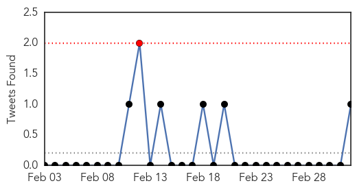
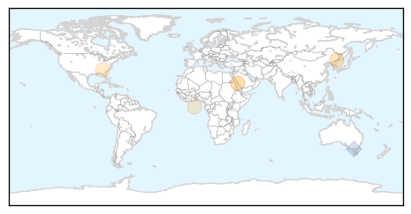
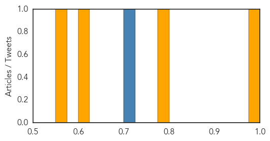

Influenza
30-Day Web Trend
0 alerts, 0 warnings

30-Day Twitter Trend
1 alerts, 0 warnings

Article Locations
Article Confidences
Top Articles:
Top Tweets:
- 0.722
- Trivia Tuesday: Three influenza pandemics occurred last century: the Spanish flu in 1918, the Asian flu in 1957 and the Hong Kong flu in...
Chikungunya
30-Day Web Trend
2 alerts, 0 warnings
30-Day Twitter Trend
0 alerts, 0 warnings

Article Locations

Article Confidences

Top Articles:
-
No articles found for Mar 04, 2014
Top Tweets:
-
No tweets found for Mar 04, 2014